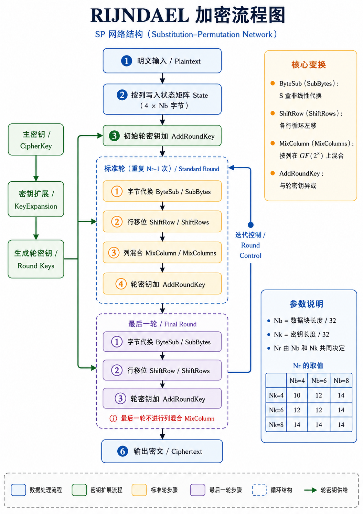
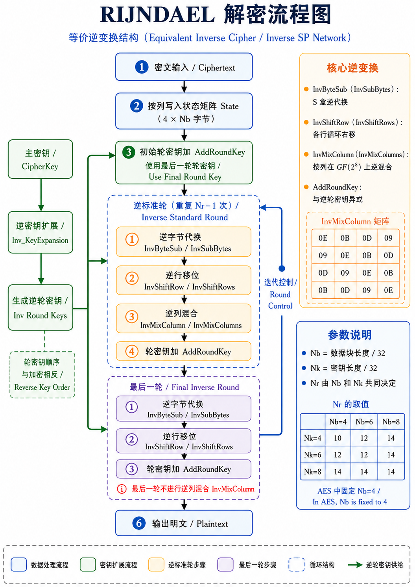

AES(RIJNDAEL)算法介绍

AES 的数据块长度固定为 128 位，也就是 16 个字节，图中参数 \(Nb\) 在 AES 中恒等于 4。密钥长度可以取 128、192、256 位，对应 \(Nk=4,6,8\)，轮数 \(Nr\) 分别为 10、12、14。
1. 明文输入与状态矩阵 State
AES 处理的基本单位是 128 位明文分组。128 位等于 16 字节，设明文字节序列为：
AES 会把这 16 个字节按列写入一个 \(4\times 4\) 的状态矩阵 State：
这一点对应图片中的“按列写入状态矩阵 State（\(4\times Nb\) 字节）”。由于 AES 中 \(Nb=4\)，所以状态矩阵就是 \(4\times 4\) 字节。之后每一轮加密操作都作用在这个矩阵上。
AES 中，状态矩阵就是算法内部的中间状态；明文进入矩阵，经过多轮变换，矩阵中的字节逐步变成密文字节。
2. 初始轮密钥加 AddRoundKey
明文写入状态矩阵之后，马上进入初始轮密钥加。图中绿色箭头从左侧“生成轮密钥 / Round Keys”指向这个步骤，表示第 0 轮轮密钥参与运算。
AddRoundKey 的运算就是把当前状态矩阵和轮密钥逐字节异或。
设状态矩阵中的某个字节为 \(s_{i,j}\)，第 0 轮轮密钥中对应位置的字节为 \(k^{(0)}_{i,j}\)，那么初始轮密钥加之后得到：
AddRoundKey 的意义在于把主密钥派生出来的轮密钥注入状态矩阵，使后面的代换、移位和列混合都建立在密钥参与后的状态之上。
对于 AES-128，总共有 10 轮加密，但轮密钥共有 11 组。第 0 组轮密钥用于初始 AddRoundKey，第 1 到第 9 组用于标准轮，第 10 组用于最后一轮。
3. 左侧密钥扩展流程：CipherKey 到 Round Keys
图片左侧的绿色分支是密钥调度过程。它从“主密钥 / CipherKey”开始，经过“密钥扩展 / KeyExpansion”，生成“轮密钥 / Round Keys”，再把轮密钥送入初始轮、标准轮和最后一轮。
以 AES-128 为例，主密钥长度为 128 位，也就是 16 字节。AES 每一组轮密钥也需要 16 字节。由于 AES-128 需要第 0 到第 10 组轮密钥，所以总扩展密钥长度为：
AES 密钥扩展通常按“字”来描述。一个字等于 4 字节。AES-128 的主密钥提供最开始的 4 个字：
之后递推生成：
每 4 个 word 组成一组 128 位轮密钥：
依次类推，直到：
密钥扩展的基本递推关系可以写成：
其中 \(Nk\) 表示主密钥包含多少个字。AES-128 中 \(Nk=4\)，AES-192 中 \(Nk=6\)，AES-256 中 \(Nk=8\)。通常情况下：
注意 当 \(i\) 是 \(Nk\) 的整数倍时，需要对 \(Temp\) 做三个处理：
这里，
RotWord把一个 4 字节字循环左移一个字节，例如：
-
SubWord对 4 个字节分别查 S 盒。 -
Rcon是轮常量，用来让各轮轮密钥之间产生明确区分。
AES-256 还会在特定位置额外使用一次 SubWord，用于增强扩展密钥中非线性成分的密度。
- \(i\mod Nk = 4\) 时，会对 \(W_{i-1}\) 先进行一次
SubWord变换
4. 标准轮：重复 \(Nr-1\) 次的核心加密结构
图片中间蓝色虚线框标注为“标准轮（重复 \(Nr-1\) 次）”。这一部分是 AES 加密的主体。
- 对于 AES-128，\(Nr=10\)，因此标准轮执行 9 次；
- 对于 AES-192，标准轮执行 11 次；
- 对于 AES-256，标准轮执行 13 次。
每一个标准轮包含四个顺序固定的步骤：
这一顺序体现了 AES 的 SP 网络结构。S 盒代换提供非线性，行移位改变字节位置，列混合实现扩散，轮密钥加把密钥材料注入当前状态。下面按图片中的四个小框逐一展开。
4.1 字节代换 ByteSub / SubBytes
SubBytes 是作用在单个字节上的代换。状态矩阵中共有 16 个字节，每个字节都会独立查 S 盒，得到一个新的字节。设输入字节为 \(x\)，S 盒输出为：
AES 的 S 盒由两个阶段构造。
第一阶段是在有限域 \(GF(2^8)\) 中求乘法逆元。对输入字节 \(x\)，先得到 \(x^{-1}\)。当输入为 0 时，按照 AES 规定取 0。
第二阶段对逆元做仿射变换，得到最终输出字节。
用教材中的矩阵形式描述，设逆元写成 8 位向量：
输出写成：
则：
其中 \(A\) 是固定的 \(8\times 8\) 二进制矩阵。这个步骤让输入字节和输出字节之间形成复杂的非线性关系。由于 S 盒逐字节作用，所以它本身负责“混淆”：攻击者即使观察到密文，也很难建立明文字节、密钥字节和输出字节之间的简单线性关系。
4.2 行移位 ShiftRow / ShiftRows
SubBytes 完成后，AES 对状态矩阵按行做循环左移。设 SubBytes 后的状态矩阵为
ShiftRows 后变为：
也就是第 0 行左移 0 字节，第 1 行左移 1 字节，第 2 行左移 2 字节，第 3 行左移 3 字节。（AES-256的移动是1、3、4）
这一操作本身只改变字节位置。它的作用要和下一步 MixColumns 连起来看。MixColumns 是按列处理的，ShiftRows 把原来同一列中的字节分散到多个列中，再交给 MixColumns 处理。经过多轮之后，一个输入字节的影响会扩散到状态矩阵的多个位置。
4.3 列混合 MixColumn / MixColumns
MixColumns 以列为单位处理状态矩阵。AES 把每一列看成 \(GF(2^8)\) 上的四维向量，然后乘以一个固定矩阵：
设某一列为：
经过 MixColumns 后得到：
展开后是：
这里的加法是异或，乘法是在 \(GF(2^8)\) 上完成。AES 中字节可以看成次数小于 8 的二进制多项式。例如字节 0x57 的二进制是 01010111，可以表示为：
在这个域中，乘以 02 相当于乘以 \(x\)。当结果超出 8 位时，要用 AES 规定的模多项式：
进行化简。工程实现中常见规则是：字节左移一位，若移出最高位，则再异或 0x1B。乘以 03 可以写成：
所以 MixColumns 可以用移位和异或高效实现。
MixColumns 的作用是扩散。一列中的 4 个输入字节共同决定 4 个输出字节。经过 ShiftRows 和 MixColumns 配合，字节之间的影响范围会从局部列扩展到整个状态矩阵。
4.4 轮密钥加 AddRoundKey
标准轮的最后一步仍然是 AddRoundKey。第 \(r\) 轮使用第 \(r\) 组轮密钥：
这个步骤把密钥材料持续注入状态。AES 中只有 AddRoundKey 直接使用密钥，SubBytes、ShiftRows、MixColumns 都是固定变换。由于每轮轮密钥由主密钥扩展得到，每一轮状态都受到主密钥控制。
5. 右侧迭代控制 Round Control
图片中标准轮右侧有“迭代控制 / Round Control”的回环箭头。这个回环表示标准轮会重复执行 \(Nr-1\) 次。循环变量可以写成：
每一轮都执行：
以 AES-128 为例：
因此前 9 轮都包含 MixColumns。每一轮处理之后，状态矩阵继续进入下一轮，直到标准轮循环完成，再进入图片下方的最后一轮。
6. 最后一轮 Final Round
图片中紫色虚线框标注为“最后一轮 / Final Round”。这一轮包含三个步骤：
图中红字提示“最后一轮省去列混合 MixColumn”。因此最后一轮的形式为：
以 AES-128 为例，最后一轮是第 10 轮，使用 \(RoundKey_{10}\)。这一步完成后，状态矩阵中的 16 个字节按列读出，得到最终密文。
从结构上看，最后一轮保留了 S 盒代换、行移位和轮密钥加。这样密文输出前仍经过非线性代换和密钥注入，同时加密流程与解密流程可以形成更清晰的逆向对应关系。
7. 输出密文 Ciphertext
最后一轮结束后，状态矩阵就是密文状态。AES 按列把状态矩阵读出，恢复成 16 字节密文序列。若最后状态矩阵为：
那么输出密文为：
这和明文写入状态矩阵时的列优先顺序相对应。
8. AES-128 的完整流程
以最常见的 AES-128 为例
第一步，输入 128 位明文，按列写入 \(4\times 4\) 状态矩阵。
第二步，主密钥经过 KeyExpansion 生成 11 组轮密钥：
第三步，状态矩阵先与 \(RoundKey_0\) 异或，完成初始 AddRoundKey。
第四步，执行第 1 到第 9 轮标准轮。每一轮依次执行：
其中第 \(r\) 轮使用 \(RoundKey_r\)。
第五步，执行第 10 轮最后轮。最后轮依次执行：
并使用 \(RoundKey_{10}\)。
第六步，将最终状态矩阵按列读出，得到 128 位密文。
用紧凑公式表示，AES-128 加密可以写成：
9. 算法实现
from __future__ import annotations
# ============================================================
# 1. GF(2^8) 有限域运算
# AES 的 SubBytes 和 MixColumns 都建立在 GF(2^8) 上。
# 一个字节可以看成次数小于 8 的二进制多项式。
# AES 使用的模多项式为：
# m(x) = x^8 + x^4 + x^3 + x + 1
# 工程实现中，对应的化简常量是 0x1B。
# ============================================================
def gmul(a: int, b: int) -> int:
"""
GF(2^8) 上的字节乘法。
参数：
a, b: 0~255 的整数，表示两个字节。
返回：
a * b 在 AES 有限域中的乘积。
实现思路：
逐位检查 b。
当 b 的最低位为 1 时，把当前 a 加入结果。
GF(2^8) 中的加法就是异或。
每轮把 a 乘以 x，相当于左移一位。
若左移前最高位为 1，则左移后需要用 0x1B 做模化简。
"""
result = 0
for _ in range(8):
if b & 1:
result ^= a
carry = a & 0x80
a = (a << 1) & 0xFF
if carry:
a ^= 0x1B
b >>= 1
return result
def gf_pow(a: int, n: int) -> int:
"""
GF(2^8) 上的快速幂。
AES S 盒构造中需要求乘法逆元。
对非零元素 a，有 a^255 = 1，所以 a 的逆元为 a^254。
"""
result = 1
while n > 0:
if n & 1:
result = gmul(result, a)
a = gmul(a, a)
n >>= 1
return result
def gf_inv(a: int) -> int:
"""
GF(2^8) 上的乘法逆元。
AES 规定输入 0 时，逆元阶段输出 0。
其他字节通过 a^254 得到逆元。
"""
if a == 0:
return 0
return gf_pow(a, 254)
# ============================================================
# 2. S 盒生成：SubBytes 的核心
# AES S 盒由两部分组成：
# 先在 GF(2^8) 中求逆元，再做仿射变换。
# ============================================================
def affine_transform(x: int) -> int:
"""
AES S 盒中的仿射变换。
参数：
x: 求逆元后的 8 位输入。
返回：
经过固定仿射变换后的 8 位输出。
位级公式：
y_i = x_i ⊕ x_{i+4} ⊕ x_{i+5} ⊕ x_{i+6} ⊕ x_{i+7} ⊕ c_i
下标按 mod 8 处理。
常量 c = 0x63。
"""
c = 0x63
y = 0
for i in range(8):
bit = (
((x >> i) & 1)
^ ((x >> ((i + 4) & 7)) & 1)
^ ((x >> ((i + 5) & 7)) & 1)
^ ((x >> ((i + 6) & 7)) & 1)
^ ((x >> ((i + 7) & 7)) & 1)
^ ((c >> i) & 1)
)
y |= bit << i
return y
# 正向 S 盒：用于加密中的 SubBytes
S_BOX = [affine_transform(gf_inv(i)) for i in range(256)]
# 逆向 S 盒：用于解密中的 InvSubBytes
INV_S_BOX = [0] * 256
for i, value in enumerate(S_BOX):
INV_S_BOX[value] = i
# ============================================================
# 3. 状态矩阵 State 与字 Word
# AES 每个明文分组为 16 字节。
# 内部状态按列组织为 4 个 word，每个 word 为 4 字节。
#
# 明文字节：
# p0 p1 p2 ... p15
#
# 状态矩阵逻辑形态：
# [ p0 p4 p8 p12 ]
# [ p1 p5 p9 p13 ]
# [ p2 p6 p10 p14 ]
# [ p3 p7 p11 p15 ]
#
# 代码中 state[c][r] 表示第 c 列第 r 行。
# ============================================================
def bytes_to_matrix(block: bytes) -> list[list[int]]:
"""
16 字节分组转为 AES 状态结构。
返回结构为 4 个列向量：
[
[p0, p1, p2, p3],
[p4, p5, p6, p7],
[p8, p9, p10, p11],
[p12, p13, p14, p15],
]
这种存储方式和 AES 按列处理的逻辑一致。
"""
return [list(block[i:i + 4]) for i in range(0, len(block), 4)]
def matrix_to_bytes(matrix: list[list[int]]) -> bytes:
"""
AES 状态结构转回字节序列。
由于状态按列保存，所以直接按列拼接即可恢复 AES 输出顺序。
"""
return bytes(sum(matrix, []))
def xor_words(a: list[int], b: list[int]) -> list[int]:
"""
两个 word 做逐字节异或。
word 在 AES 中表示 4 字节。
"""
return [x ^ y for x, y in zip(a, b)]
def rot_word(word: list[int]) -> list[int]:
"""
KeyExpansion 中的 RotWord。
例如：
[a0, a1, a2, a3] -> [a1, a2, a3, a0]
"""
return word[1:] + word[:1]
def sub_word(word: list[int]) -> list[int]:
"""
KeyExpansion 中的 SubWord。
对 word 中的 4 个字节分别查 S 盒。
"""
return [S_BOX[b] for b in word]
def make_rcon(count: int = 15) -> list[int]:
"""
生成密钥扩展需要的轮常量 Rcon。
Rcon[i] 的第一个字节是 GF(2^8) 中的 2^(i-1)，
后三个字节在使用时取 0。
"""
rcon = [0x00]
value = 0x01
for _ in range(1, count):
rcon.append(value)
value = gmul(value, 0x02)
return rcon
RCON = make_rcon()
# ============================================================
# 4. 密钥扩展 KeyExpansion
# 图中左侧流程：
# 主密钥 CipherKey -> 密钥扩展 KeyExpansion -> 轮密钥 Round Keys
#
# AES-128: Nk = 4, Nr = 10
# AES-192: Nk = 6, Nr = 12
# AES-256: Nk = 8, Nr = 14
# 其中 Nk 表示主密钥包含多少个 word。
# ============================================================
def expand_key(master_key: bytes) -> tuple[list[list[list[int]]], int]:
"""
根据主密钥生成所有轮密钥。
参数：
master_key:
16 字节 -> AES-128
24 字节 -> AES-192
32 字节 -> AES-256
返回：
round_keys:
每个元素是一组轮密钥。
每组轮密钥包含 4 个 word，也就是 16 字节。
nr:
AES 轮数。
"""
key_len = len(master_key)
if key_len not in (16, 24, 32):
raise ValueError("AES key length must be 16, 24, or 32 bytes")
nk = key_len // 4
nr = nk + 6
# 主密钥先切分成若干 word
words = bytes_to_matrix(master_key)
# AES 需要 nr + 1 组轮密钥，每组 4 个 word
target_words = 4 * (nr + 1)
while len(words) < target_words:
i = len(words)
temp = words[-1].copy()
# 每隔 nk 个 word 触发一次核心变换：
# RotWord -> SubWord -> XOR Rcon
if i % nk == 0:
temp = xor_words(
sub_word(rot_word(temp)),
[RCON[i // nk], 0x00, 0x00, 0x00],
)
# AES-256 的额外 SubWord 规则
elif nk > 6 and i % nk == 4:
temp = sub_word(temp)
# 新 word 由前 nk 个 word 与 temp 异或得到
words.append(xor_words(words[i - nk], temp))
# 每 4 个 word 组成一组轮密钥
round_keys = [
words[4 * i: 4 * (i + 1)]
for i in range(nr + 1)
]
return round_keys, nr
# ============================================================
# 5. AddRoundKey：轮密钥加
# 图中对应：
# 初始轮密钥加 AddRoundKey
# 标准轮中的 AddRoundKey
# 最后一轮中的 AddRoundKey
# ============================================================
def add_round_key(state: list[list[int]], round_key: list[list[int]]) -> None:
"""
状态矩阵与轮密钥逐字节异或。
state[c][r] 表示第 c 列第 r 行。
round_key 使用同样的列式结构。
"""
for c in range(4):
for r in range(4):
state[c][r] ^= round_key[c][r]
# ============================================================
# 6. SubBytes：字节代换
# 图中标准轮和最后一轮的第一个步骤。
# ============================================================
def sub_bytes(state: list[list[int]]) -> None:
"""
对状态矩阵中的每个字节执行 S 盒代换。
"""
for c in range(4):
for r in range(4):
state[c][r] = S_BOX[state[c][r]]
def inv_sub_bytes(state: list[list[int]]) -> None:
"""
解密时使用的逆字节代换。
"""
for c in range(4):
for r in range(4):
state[c][r] = INV_S_BOX[state[c][r]]
# ============================================================
# 7. ShiftRows：行移位
# 图中标准轮和最后一轮的第二个步骤。
#
# 第 0 行左移 0 字节
# 第 1 行左移 1 字节
# 第 2 行左移 2 字节
# 第 3 行左移 3 字节
# ============================================================
def shift_rows(state: list[list[int]]) -> None:
"""
对状态矩阵的每一行做循环左移。
由于代码中 state 按列存储，所以先取出某一行，
完成循环左移后再写回对应位置。
"""
for r in range(1, 4):
row = [state[c][r] for c in range(4)]
row = row[r:] + row[:r]
for c in range(4):
state[c][r] = row[c]
def inv_shift_rows(state: list[list[int]]) -> None:
"""
解密时使用的逆行移位。
第 r 行循环右移 r 个字节。
"""
for r in range(1, 4):
row = [state[c][r] for c in range(4)]
row = row[-r:] + row[:-r]
for c in range(4):
state[c][r] = row[c]
# ============================================================
# 8. MixColumns：列混合
# 图中标准轮的第三个步骤。
#
# 对每一列乘以固定矩阵：
# [02 03 01 01]
# [01 02 03 01]
# [01 01 02 03]
# [03 01 01 02]
# ============================================================
def mix_single_column(col: list[int]) -> None:
"""
对状态矩阵的一列执行 MixColumns。
输入列：
[s0, s1, s2, s3]
输出列：
s0' = 02*s0 ⊕ 03*s1 ⊕ 01*s2 ⊕ 01*s3
s1' = 01*s0 ⊕ 02*s1 ⊕ 03*s2 ⊕ 01*s3
s2' = 01*s0 ⊕ 01*s1 ⊕ 02*s2 ⊕ 03*s3
s3' = 03*s0 ⊕ 01*s1 ⊕ 01*s2 ⊕ 02*s3
"""
a0, a1, a2, a3 = col
col[0] = gmul(a0, 0x02) ^ gmul(a1, 0x03) ^ a2 ^ a3
col[1] = a0 ^ gmul(a1, 0x02) ^ gmul(a2, 0x03) ^ a3
col[2] = a0 ^ a1 ^ gmul(a2, 0x02) ^ gmul(a3, 0x03)
col[3] = gmul(a0, 0x03) ^ a1 ^ a2 ^ gmul(a3, 0x02)
def mix_columns(state: list[list[int]]) -> None:
"""
对状态矩阵的 4 列分别执行 MixColumns。
"""
for c in range(4):
mix_single_column(state[c])
def inv_mix_single_column(col: list[int]) -> None:
"""
解密时使用的逆列混合。
逆矩阵为：
[0E 0B 0D 09]
[09 0E 0B 0D]
[0D 09 0E 0B]
[0B 0D 09 0E]
"""
a0, a1, a2, a3 = col
col[0] = (
gmul(a0, 0x0E)
^ gmul(a1, 0x0B)
^ gmul(a2, 0x0D)
^ gmul(a3, 0x09)
)
col[1] = (
gmul(a0, 0x09)
^ gmul(a1, 0x0E)
^ gmul(a2, 0x0B)
^ gmul(a3, 0x0D)
)
col[2] = (
gmul(a0, 0x0D)
^ gmul(a1, 0x09)
^ gmul(a2, 0x0E)
^ gmul(a3, 0x0B)
)
col[3] = (
gmul(a0, 0x0B)
^ gmul(a1, 0x0D)
^ gmul(a2, 0x09)
^ gmul(a3, 0x0E)
)
def inv_mix_columns(state: list[list[int]]) -> None:
"""
对状态矩阵的 4 列分别执行 InvMixColumns。
"""
for c in range(4):
inv_mix_single_column(state[c])
# ============================================================
# 9. AES 单分组加密
# 图中间主流程：
# 明文输入
# -> 状态矩阵
# -> 初始 AddRoundKey
# -> 标准轮重复 Nr-1 次
# -> 最后一轮
# -> 密文输出
# ============================================================
def encrypt_block(block: bytes, master_key: bytes) -> bytes:
"""
加密一个 16 字节分组。
标准轮：
SubBytes -> ShiftRows -> MixColumns -> AddRoundKey
最后一轮：
SubBytes -> ShiftRows -> AddRoundKey
参数：
block:
16 字节明文分组。
master_key:
16、24 或 32 字节主密钥。
返回：
16 字节密文分组。
"""
if len(block) != 16:
raise ValueError("AES block length must be 16 bytes")
round_keys, nr = expand_key(master_key)
state = bytes_to_matrix(block)
# 初始轮密钥加：使用 RoundKey_0
add_round_key(state, round_keys[0])
# 标准轮：第 1 轮到第 Nr-1 轮
for round_index in range(1, nr):
sub_bytes(state)
shift_rows(state)
mix_columns(state)
add_round_key(state, round_keys[round_index])
# 最后一轮：省略 MixColumns
sub_bytes(state)
shift_rows(state)
add_round_key(state, round_keys[nr])
return matrix_to_bytes(state)
# ============================================================
# 10. AES 单分组解密
# 加密流程的逆过程：
# AddRoundKey
# -> InvShiftRows
# -> InvSubBytes
# -> AddRoundKey
# -> InvMixColumns
# ============================================================
def decrypt_block(block: bytes, master_key: bytes) -> bytes:
"""
解密一个 16 字节分组。
参数：
block:
16 字节密文分组。
master_key:
16、24 或 32 字节主密钥。
返回：
16 字节明文分组。
"""
if len(block) != 16:
raise ValueError("AES block length must be 16 bytes")
round_keys, nr = expand_key(master_key)
state = bytes_to_matrix(block)
# 解密从最后一组轮密钥开始
add_round_key(state, round_keys[nr])
# 中间逆轮：第 Nr-1 轮回到第 1 轮
for round_index in range(nr - 1, 0, -1):
inv_shift_rows(state)
inv_sub_bytes(state)
add_round_key(state, round_keys[round_index])
inv_mix_columns(state)
# 逆向收尾：对应加密开始处的初始 AddRoundKey
inv_shift_rows(state)
inv_sub_bytes(state)
add_round_key(state, round_keys[0])
return matrix_to_bytes(state)
# ============================================================
# 11. PKCS#7 填充
# AES 的单分组长度固定为 16 字节。
# 多字节消息进入 AES 前，需要补齐到 16 字节整数倍。
# ============================================================
def pkcs7_pad(data: bytes, block_size: int = 16) -> bytes:
"""
PKCS#7 填充。
若原始数据长度已经是 16 的整数倍，
仍会补上一整块 0x10。
这样解密后才能准确识别填充长度。
"""
pad_len = block_size - len(data) % block_size
return data + bytes([pad_len]) * pad_len
def pkcs7_unpad(data: bytes, block_size: int = 16) -> bytes:
"""
移除 PKCS#7 填充。
"""
if len(data) == 0 or len(data) % block_size != 0:
raise ValueError("invalid PKCS#7 data length")
pad_len = data[-1]
if pad_len < 1 or pad_len > block_size:
raise ValueError("invalid PKCS#7 padding")
if data[-pad_len:] != bytes([pad_len]) * pad_len:
raise ValueError("invalid PKCS#7 padding")
return data[:-pad_len]
# ============================================================
# 12. ECB 模式演示
# 这里用于展示多个分组如何调用 encrypt_block。
# 工程项目中通常采用带认证能力的模式，例如 AES-GCM。
# ============================================================
def encrypt_ecb(data: bytes, master_key: bytes) -> bytes:
"""
ECB 模式加密演示。
过程：
1. 对数据做 PKCS#7 填充。
2. 每 16 字节切成一个分组。
3. 分别调用 encrypt_block。
"""
data = pkcs7_pad(data)
result = bytearray()
for i in range(0, len(data), 16):
result.extend(encrypt_block(data[i:i + 16], master_key))
return bytes(result)
def decrypt_ecb(ciphertext: bytes, master_key: bytes) -> bytes:
"""
ECB 模式解密演示。
过程：
1. 每 16 字节切成一个密文分组。
2. 分别调用 decrypt_block。
3. 合并后移除 PKCS#7 填充。
"""
if len(ciphertext) % 16 != 0:
raise ValueError("ciphertext length must be a multiple of 16 bytes")
result = bytearray()
for i in range(0, len(ciphertext), 16):
result.extend(decrypt_block(ciphertext[i:i + 16], master_key))
return pkcs7_unpad(bytes(result))
# ============================================================
# 13. 测试与演示
# demo_block 使用 AES 常见测试向量：
# key = 000102030405060708090a0b0c0d0e0f
# plaintext = 00112233445566778899aabbccddeeff
# ciphertext= 69c4e0d86a7b0430d8cdb78070b4c55a
# ============================================================
def demo_block() -> None:
"""
单分组 AES-128 测试。
"""
key = bytes.fromhex("000102030405060708090a0b0c0d0e0f")
plaintext = bytes.fromhex("00112233445566778899aabbccddeeff")
ciphertext = encrypt_block(plaintext, key)
recovered = decrypt_block(ciphertext, key)
print("AES-128 single block test")
print("key =", key.hex())
print("plaintext =", plaintext.hex())
print("ciphertext=", ciphertext.hex())
print("recovered =", recovered.hex())
expected = "69c4e0d86a7b0430d8cdb78070b4c55a"
print("expected =", expected)
print("pass =", ciphertext.hex() == expected and recovered == plaintext)
def demo_ecb() -> None:
"""
多分组文本加解密演示。
"""
key = b"this_is_16_bytes"
data = "RIJNDAEL / AES 加密流程演示".encode("utf-8")
ciphertext = encrypt_ecb(data, key)
recovered = decrypt_ecb(ciphertext, key)
print()
print("ECB demo")
print("plaintext =", data.decode("utf-8"))
print("ciphertext=", ciphertext.hex())
print("recovered =", recovered.decode("utf-8"))
if __name__ == "__main__":
demo_block()
demo_ecb()
解密算法
